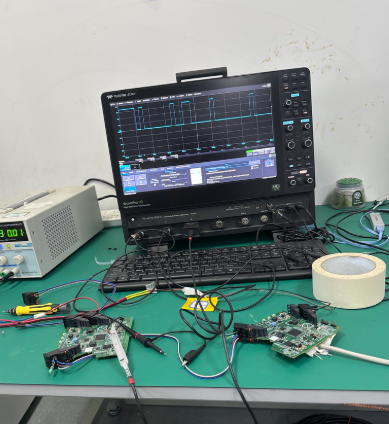
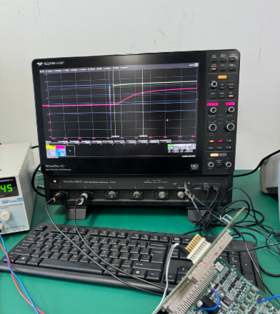

Communication Module Verification Procedures
Overview
Communication module hardware products and prototypes required rigorous vertification to ensure they meet electrical, functional, and reliability specifications before release.
My Contributions
My role as a hardware verification engineer intern at Consen Automation involved developing and conducting hardware verification procedures that tested power, clock, logic and status, reset, ripple and noise, and timing signals on PCB modules. These processes demanded researching the requirements and specifications of hardware components to create suitable test plans.
I also collaborated on building and configuring test environments to support these verification procedures, including simulating real load conditions for accurate and reliable testing.
Throughout my time at Consen Automation, I had the opportunity of supporting the verification procedures of 5+ communication module PCBAs. These in-house products consisted of Ethernet <-> CAN, CAN <-> Fibre Optic, Ethernet <-> Fibre Optic, and Ethernet-APL <-> RS485 functions.

Module PCBA Top

Module PCBA Bottom
Apart from functional verification, I also supported environment compliance testing, including ESD and temperature compliance, using thermal chambers and ESD simulators to ensure reliability requirements.